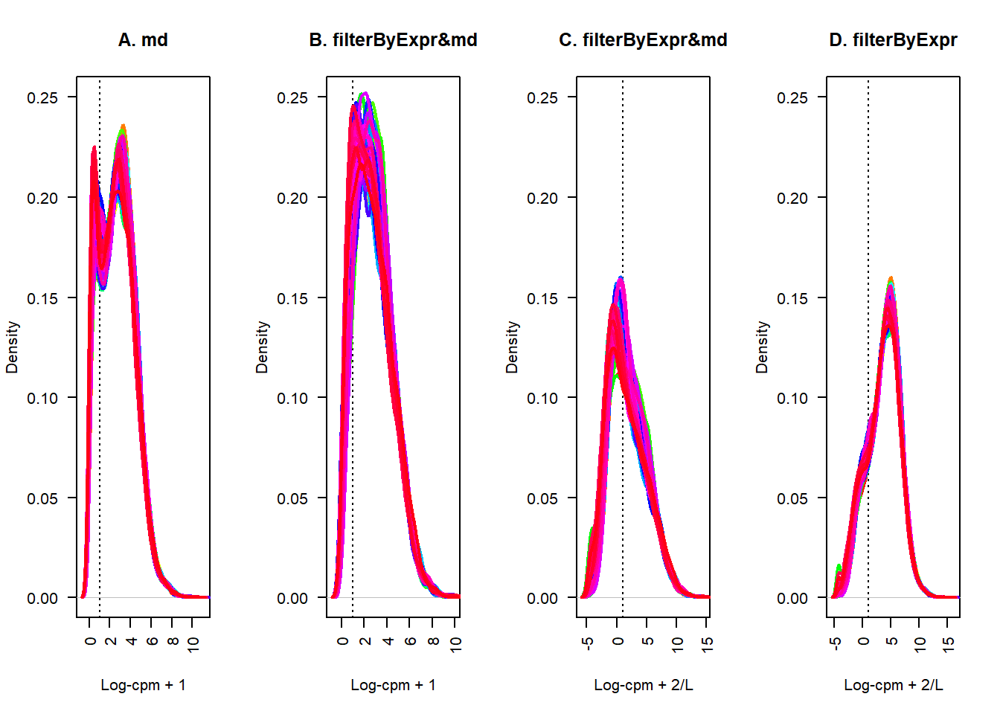

Last updated: 2021-07-03
Checks: 7 0
Knit directory: wgcna-workflow/
This reproducible R Markdown analysis was created with workflowr (version 1.6.2). The Checks tab describes the reproducibility checks that were applied when the results were created. The Past versions tab lists the development history.
Great! Since the R Markdown file has been committed to the Git repository, you know the exact version of the code that produced these results.
Great job! The global environment was empty. Objects defined in the global environment can affect the analysis in your R Markdown file in unknown ways. For reproduciblity it’s best to always run the code in an empty environment.
The command set.seed(20210703) was run prior to running the code in the R Markdown file. Setting a seed ensures that any results that rely on randomness, e.g. subsampling or permutations, are reproducible.
Great job! Recording the operating system, R version, and package versions is critical for reproducibility.
Nice! There were no cached chunks for this analysis, so you can be confident that you successfully produced the results during this run.
Great job! Using relative paths to the files within your workflowr project makes it easier to run your code on other machines.
Great! You are using Git for version control. Tracking code development and connecting the code version to the results is critical for reproducibility.
The results in this page were generated with repository version 90f458a. See the Past versions tab to see a history of the changes made to the R Markdown and HTML files.
Note that you need to be careful to ensure that all relevant files for the analysis have been committed to Git prior to generating the results (you can use wflow_publish or wflow_git_commit). workflowr only checks the R Markdown file, but you know if there are other scripts or data files that it depends on. Below is the status of the Git repository when the results were generated:
Ignored files:
Ignored: .Rproj.user/
Untracked files:
Untracked: data/all_for_wgcna/
Untracked: data/project/
Unstaged changes:
Modified: analysis/_site.yml
Modified: data/README.md
Note that any generated files, e.g. HTML, png, CSS, etc., are not included in this status report because it is ok for generated content to have uncommitted changes.
These are the previous versions of the repository in which changes were made to the R Markdown (analysis/FilterAndCpm-analysis.Rmd) and HTML (docs/FilterAndCpm-analysis.html) files. If you’ve configured a remote Git repository (see ?wflow_git_remote), click on the hyperlinks in the table below to view the files as they were in that past version.
| File | Version | Author | Date | Message |
|---|---|---|---|---|
| Rmd | 90f458a | xiayh17 | 2021-07-03 | Publish the initial files for myproject |
Eight files named start with PRJ were store in data/project.
fs=list.files(path = 'data/project/',
pattern='PRJ',full.names = T,recursive = T)
fs[1] "data/project/PRJNA264301.Rdata" "data/project/PRJNA278053.Rdata"
[3] "data/project/PRJNA304027.Rdata" "data/project/PRJNA335422.Rdata"
[5] "data/project/PRJNA338058.Rdata" "data/project/PRJNA384849.Rdata"
[7] "data/project/PRJNA412041.Rdata" "data/project/PRJNA513864.Rdata"Load one of them to make a test. It’s a count data frame contains 74 samples start name with SSR and 27607 Genes named with ENSBTAG and number
f=fs[1]
load(f)
pro=gsub('.Rdata','',basename(f))
print(pro)[1] "PRJNA264301"colnames(cg_exp)[1:10] [1] "SRR1616612" "SRR1616613" "SRR1616614" "SRR1616615" "SRR1616616"
[6] "SRR1616618" "SRR1616619" "SRR1616620" "SRR1616622" "SRR1616623"ncol(cg_exp)[1] 74rownames(cg_exp)[1:10] [1] "ENSBTAG00000006648" "ENSBTAG00000049697" "ENSBTAG00000047028"
[4] "ENSBTAG00000053686" "ENSBTAG00000054829" "ENSBTAG00000046619"
[7] "ENSBTAG00000001753" "ENSBTAG00000020035" "ENSBTAG00000005540"
[10] "ENSBTAG00000001150"nrow(cg_exp)[1] 27607对Count数据进行预处理，主要是筛选和CPM的计算
cpm之后+1并且log, 然后用平均mad进行筛选
## step 1 : create input
ct=cg_exp
ct[1:4,1:4] SRR1616612 SRR1616613 SRR1616614 SRR1616615
ENSBTAG00000006648 0 0 0 0
ENSBTAG00000049697 0 0 0 0
ENSBTAG00000047028 0 0 0 0
ENSBTAG00000053686 0 0 0 0ct=log(edgeR::cpm(ct)+1)
ct[1:4,1:4] SRR1616612 SRR1616613 SRR1616614 SRR1616615
ENSBTAG00000006648 0 0 0 0
ENSBTAG00000049697 0 0 0 0
ENSBTAG00000047028 0 0 0 0
ENSBTAG00000053686 0 0 0 0md=apply(ct,1,mad)
boxplot(md) datExpr = t( ct[md > mean(md) ,])
print(dim(datExpr))[1] 74 11427datExpr[1:4,1:4] ENSBTAG00000020035 ENSBTAG00000011528 ENSBTAG00000012594
SRR1616612 3.840507 1.041422 5.554024
SRR1616613 4.086120 1.339224 4.953389
SRR1616614 3.729771 1.505957 4.567235
SRR1616615 3.937969 1.748945 5.295961
ENSBTAG00000018278
SRR1616612 4.979899
SRR1616613 4.903301
SRR1616614 4.856100
SRR1616615 5.630155保留了大约百分之四十一的基因
## check
lcpm.cutoff <- 1
nsamples <- nrow(datExpr)
col <- rainbow(nsamples)
plot(density(datExpr[1,]), lwd=2, ylim=c(0,0.25), las=2, main="", xlab="", col=col[1])
title(main="A. md", xlab="Log-cpm+1")
abline(v=lcpm.cutoff, lty=3)
for (i in 2:nsamples){
den <- density(datExpr[i,])
lines(den$x, den$y, col=col[i], lwd=2)
}可以看一下不同表达量的基因分布情况 可以看到在0到1和3到4的地方形成了两个高峰，低表达位置的基因还是有大量保留
使用edgeR包中的filterByExpr函数进行筛选之后cpm 此函数默认选取最小的组内的样本数量为最小样本数，保留至少在这个数量的样本中有10个或更多计数的基因。实际进行过滤时，使用的是CPM值而不是表达计数，以避免对总序列数大的样本的偏向性。
比较麻烦的是需要分组数据，这里每个数据集的分组数据都不是统一的格式，勉强获取了分组信息的路径，但是具体哪一列，仍难不好确定
library(fs)
key <- gsub(".Rdata","",basename(f),perl = TRUE)
test <- dir_info("data/all_for_wgcna", recurse = TRUE)
patho <- grep(key,test$path)
path <- test[patho,]$path暂时通过人工确认，测试数据的分组信息可能在infection_status这一列
gd <- read.delim(path)
head(gd) Run infection_status source_name Time_point
1 SRR1616611 0 0 24
2 SRR1616612 0 1 2
3 SRR1616613 0 2 48
4 SRR1616614 0 3 6
5 SRR1616615 1 4 24
6 SRR1616616 1 5 2group <- as.factor(gd$infection_status)
keep.exprs <- edgeR::filterByExpr(cg_exp, group=group)
cg_exp2 <- cg_exp[keep.exprs,] # 重新计算文库大小
dim(cg_exp2)[1] 12952 74筛选后保留了12952个基因，大约百分之四十七
ct = cg_exp2
ct=log(edgeR::cpm(ct)+1)
ct[1:4,1:4] SRR1616612 SRR1616613 SRR1616614 SRR1616615
ENSBTAG00000020035 3.840952 4.086445 3.730207 3.938349
ENSBTAG00000011528 1.041717 1.339467 1.506304 1.749266
ENSBTAG00000012594 5.554477 4.953717 4.567677 5.296347
ENSBTAG00000018278 4.980350 4.903629 4.856543 5.630541md=apply(ct,1,mad)
boxplot(md) datExpr2 = t( ct[md > mean(md) ,])
print(dim(datExpr2))[1] 74 4200datExpr2[1:4,1:4] ENSBTAG00000020035 ENSBTAG00000011528 ENSBTAG00000021997
SRR1616612 3.840952 1.041717 3.969819
SRR1616613 4.086445 1.339467 4.622254
SRR1616614 3.730207 1.506304 4.274183
SRR1616615 3.938349 1.749266 3.612241
ENSBTAG00000035175
SRR1616612 3.189599
SRR1616613 2.998716
SRR1616614 3.406343
SRR1616615 3.158660如果继续用md进一步筛选，基因数量只剩下4200，只有原来的15%
可以看看现在的基因表达量分布情况
lcpm.cutoff <- 1
nsamples <- nrow(datExpr)
col <- rainbow(nsamples)
par(mfrow=c(1,2))
plot(density(datExpr[1,]), lwd=2, ylim=c(0,0.25), las=2, main="", xlab="", col=col[1])
title(main="A. md", xlab="Log-cpm+1")
abline(v=lcpm.cutoff, lty=3)
for (i in 2:nsamples){
den <- density(datExpr[i,])
lines(den$x, den$y, col=col[i], lwd=2)
}
plot(density(datExpr2[1,]), lwd=2, ylim=c(0,0.25), las=2, main="", xlab="", col=col[1])
title(main="B. filterByExpr&md", xlab="Log-cpm+1")
abline(v=lcpm.cutoff, lty=3)
for (i in 2:nsamples){
den <- density(datExpr2[i,])
lines(den$x, den$y, col=col[i], lwd=2)
}尽管表达量集中到了一处，但是高峰处的线明显比较分散，而且保留的基因较少
有什么办法得到一个基因数量合适，并且各个样本的分布更一致呢？
在前面的方案中，为了log的值不为0，我们先加了1。实际上cpm函数包含这一作用的参数prior.count，默认为2/L，称为弥补值，其中2是“预先计数”，而L是样本文库大小（以百万计）的平均值，所以log-CPM值是根据CPM值通过log2(CPM + 2/L)计算得到的。
所以直接cpm(ct,log=T), 用他的弥补值试试
ct = cg_exp2
ct=edgeR::cpm(ct,log=T)
ct[1:4,1:4] SRR1616612 SRR1616613 SRR1616614 SRR1616615
ENSBTAG00000020035 5.5116785 5.872355 5.348395 5.654970
ENSBTAG00000011528 0.9160604 1.520994 1.833056 2.264013
ENSBTAG00000012594 8.0081178 7.137027 6.575508 7.634151
ENSBTAG00000018278 7.1757062 7.064267 6.995844 8.118244md=apply(ct,1,mad)
par(mfrow=c(1,1))
boxplot(md) datExpr3 = t( ct[md > mean(md) ,])
print(dim(datExpr3))[1] 74 4573datExpr3[1:4,1:4] ENSBTAG00000020035 ENSBTAG00000011528 ENSBTAG00000021997
SRR1616612 5.511679 0.9160604 5.701211
SRR1616613 5.872355 1.5209942 6.655008
SRR1616614 5.348395 1.8330559 6.147191
SRR1616615 5.654970 2.2640127 5.174001
ENSBTAG00000003063
SRR1616612 6.847349
SRR1616613 7.049982
SRR1616614 5.876966
SRR1616615 6.027033此时我们只剩下了4573个
lcpm.cutoff <- 1
nsamples <- nrow(datExpr)
col <- rainbow(nsamples)
par(mfrow=c(1,3))
plot(density(datExpr[1,]), lwd=2, ylim=c(0,0.25), las=2, main="", xlab="", col=col[1])
title(main="A. md", xlab="Log-cpm + 1")
abline(v=lcpm.cutoff, lty=3)
for (i in 2:nsamples){
den <- density(datExpr[i,])
lines(den$x, den$y, col=col[i], lwd=2)
}
plot(density(datExpr2[1,]), lwd=2, ylim=c(0,0.25), las=2, main="", xlab="", col=col[1])
title(main="B. filterByExpr&md", xlab="Log-cpm + 1")
abline(v=lcpm.cutoff, lty=3)
for (i in 2:nsamples){
den <- density(datExpr2[i,])
lines(den$x, den$y, col=col[i], lwd=2)
}
plot(density(datExpr3[1,]), lwd=2, ylim=c(0,0.25), las=2, main="", xlab="", col=col[1])
title(main="C. filterByExpr&md", xlab="Log-cpm + 2/L")
abline(v=lcpm.cutoff, lty=3)
for (i in 2:nsamples){
den <- density(datExpr3[i,])
lines(den$x, den$y, col=col[i], lwd=2)
}这个结果看上去不太理想，相比方案二并没有好到哪里去
从上面的几番处理下来，得到的结果聚集到了一个很低的位置
试试不要mad了，直接只使用filterByExpr
ct = cg_exp2
datExpr4=edgeR::cpm(ct,log=T)lcpm.cutoff <- 1
nsamples <- nrow(datExpr)
col <- rainbow(nsamples)
par(mfrow=c(1,4))
plot(density(datExpr[1,]), lwd=2, ylim=c(0,0.25), las=2, main="", xlab="", col=col[1])
title(main="A. md", xlab="Log-cpm + 1")
abline(v=lcpm.cutoff, lty=3)
for (i in 2:nsamples){
den <- density(datExpr[i,])
lines(den$x, den$y, col=col[i], lwd=2)
}
plot(density(datExpr2[1,]), lwd=2, ylim=c(0,0.25), las=2, main="", xlab="", col=col[1])
title(main="B. filterByExpr&md", xlab="Log-cpm + 1")
abline(v=lcpm.cutoff, lty=3)
for (i in 2:nsamples){
den <- density(datExpr2[i,])
lines(den$x, den$y, col=col[i], lwd=2)
}
plot(density(datExpr3[1,]), lwd=2, ylim=c(0,0.25), las=2, main="", xlab="", col=col[1])
title(main="C. filterByExpr&md", xlab="Log-cpm + 2/L")
abline(v=lcpm.cutoff, lty=3)
for (i in 2:nsamples){
den <- density(datExpr3[i,])
lines(den$x, den$y, col=col[i], lwd=2)
}
nsamples <- ncol(datExpr4)
plot(density(datExpr4[,1]), lwd=2, ylim=c(0,0.25), las=2, main="", xlab="", col=col[1])
title(main="A. Raw data", xlab="Log-cpm")
abline(v=lcpm.cutoff, lty=3)
for (i in 2:nsamples){
den <- density(datExpr4[,i])
lines(den$x, den$y, col=col[i], lwd=2)
}
终于，看上去，相比之前，得到了一个相对好看的表达分布。
sessionInfo()R version 4.0.2 (2020-06-22)
Platform: x86_64-w64-mingw32/x64 (64-bit)
Running under: Windows 10 x64 (build 19042)
Matrix products: default
locale:
[1] LC_COLLATE=Chinese (Simplified)_China.936
[2] LC_CTYPE=Chinese (Simplified)_China.936
[3] LC_MONETARY=Chinese (Simplified)_China.936
[4] LC_NUMERIC=C
[5] LC_TIME=Chinese (Simplified)_China.936
attached base packages:
[1] stats graphics grDevices utils datasets methods base
other attached packages:
[1] fs_1.5.0 workflowr_1.6.2
loaded via a namespace (and not attached):
[1] Rcpp_1.0.6 highr_0.9 pillar_1.6.1 compiler_4.0.2
[5] bslib_0.2.5.1 later_1.2.0 jquerylib_0.1.4 git2r_0.28.0
[9] tools_4.0.2 digest_0.6.27 jsonlite_1.7.2 evaluate_0.14
[13] lifecycle_1.0.0 tibble_3.1.2 lattice_0.20-41 pkgconfig_2.0.3
[17] rlang_0.4.11 yaml_2.2.1 xfun_0.24 stringr_1.4.0
[21] knitr_1.33 vctrs_0.3.8 sass_0.4.0 grid_4.0.2
[25] locfit_1.5-9.4 rprojroot_2.0.2 glue_1.4.2 R6_2.5.0
[29] fansi_0.5.0 rmarkdown_2.9 limma_3.46.0 magrittr_2.0.1
[33] whisker_0.4 edgeR_3.30.3 promises_1.2.0.1 ellipsis_0.3.2
[37] htmltools_0.5.1.1 httpuv_1.6.1 utf8_1.2.1 stringi_1.5.3
[41] crayon_1.4.1